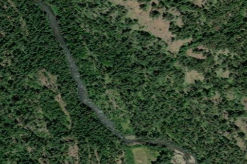

MINAM LODGE
7OR0 · OR

Aerial imagery source: Esri, Vantor, Earthstar Geographics, and the GIS User Community
View original source (FAA + Shortfield) →
| Identifier | 7OR0 |
|---|---|
| State | OR |
| Runway length | 2,000 ft |
| Runway width | 40 ft |
| Surface | TURF |
| Runway | N/S |
| Elevation | 3,589 ft |
| Ownership | private |
| CTAF | 122.9 |
| Coordinates | 45.3581975, -117.63436805 |
Notes
[shortfield] Minam River Lodge is an oasis in the wilderness. Adjacent to the historic Reds Horse Ranch, the lodge is accessible only by horseback, foot, or small bush plane. Situated outside of La Grande, Oregon, in the midst of the Eagle Cap Wilderness, it is a true escape from the everyday world. The wild and scenic Minam River flows a short distance away, offering guests a chance to get away from urban activities and slow down the pace. Time can be spent fishing, hiking, swimming, horseback riding, hunting, or simply relaxing and wildlife watching. A wide range of accommodations is available, from rustic wall tents to a luxurious deluxe suite in the Lodge. Guests can experience fresh air, beautiful scenery, pristine water, great food, and warm, friendly company while enjoying the large rock fireplaces in the lodge or relaxing outside on the deck. Animals regularly seen around Minam Lodge include elk, mountain goat, raccoon, deer, and the occasional bear. Grouse, turkey, several species of raptors, hummingbirds, and innumerable resident and migratory songbirds also frequent the area.